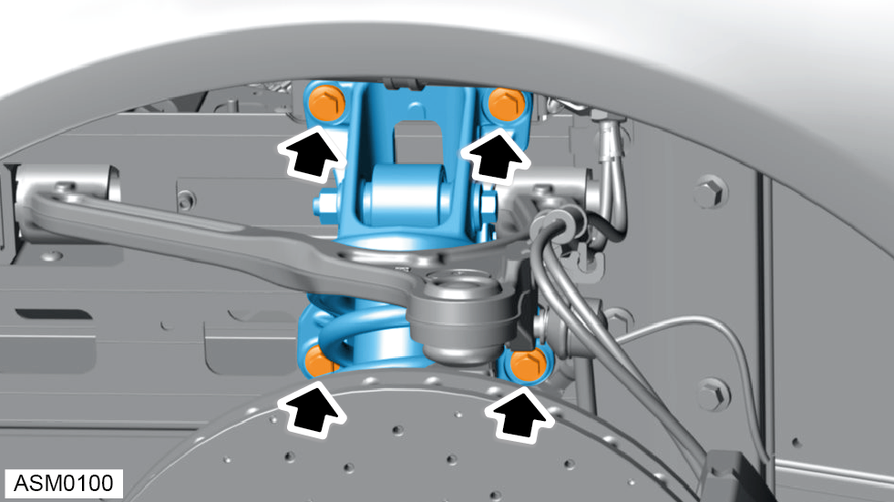

Spring / Damper Assembly - Left Side
Print
Operation Code: 31.01.38-01
Removal
- Remove wheelarch liner - front - left side. Refer to procedure.
- Remove anti-roll bar drop link front - left side. Refer to procedure.
- Remove M14x110 bolt and M14 nut securing lower damper mounting to lower wishbone. Discard nut. Torque 190 Nm.

- Remove M10x30 bolts (x4) securing spring / damper assembly bracket to subframe. Torque 45 Nm.
- Lift spring / damper assembly upwards to clear lower wishbone then remove from vehicle.
Installation
- Installation is the reverse of removal procedure except for the following:
- Renew lock nut fasteners that have been removed during removal procedure.